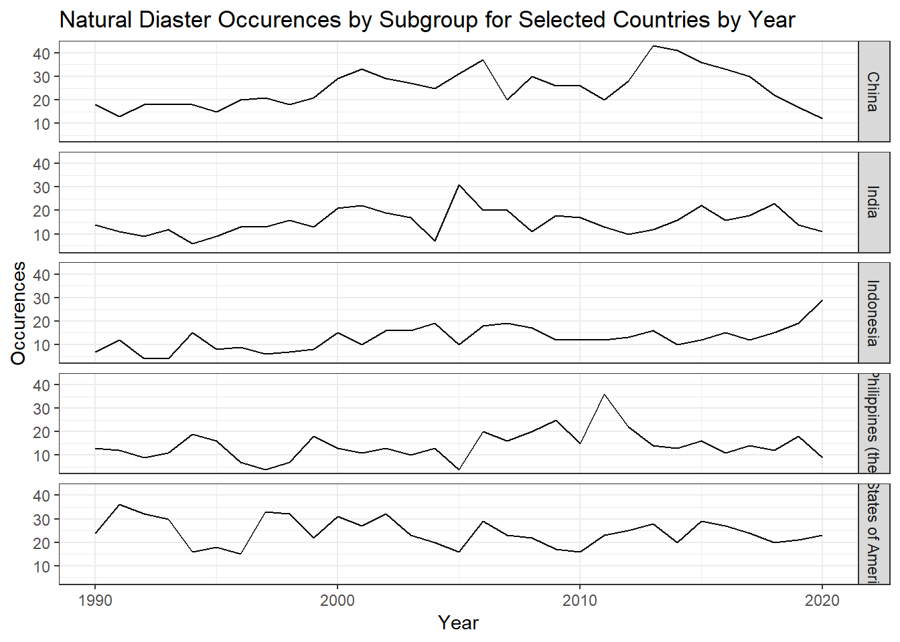
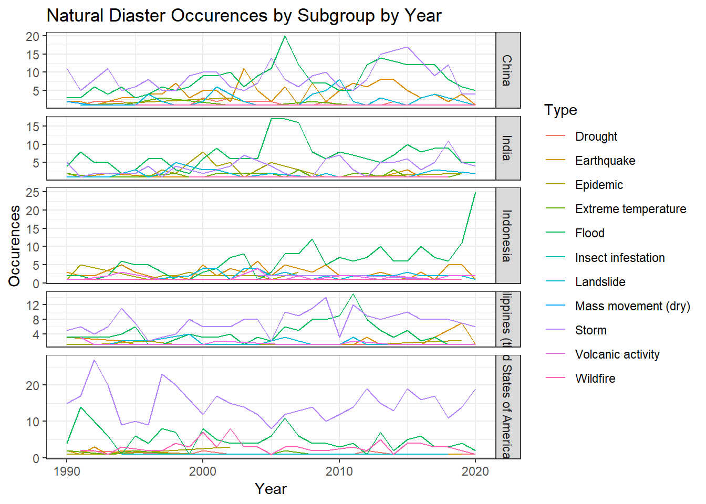
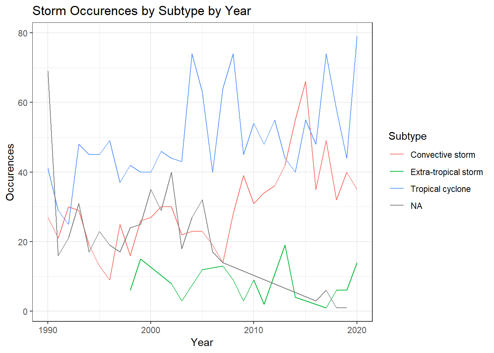
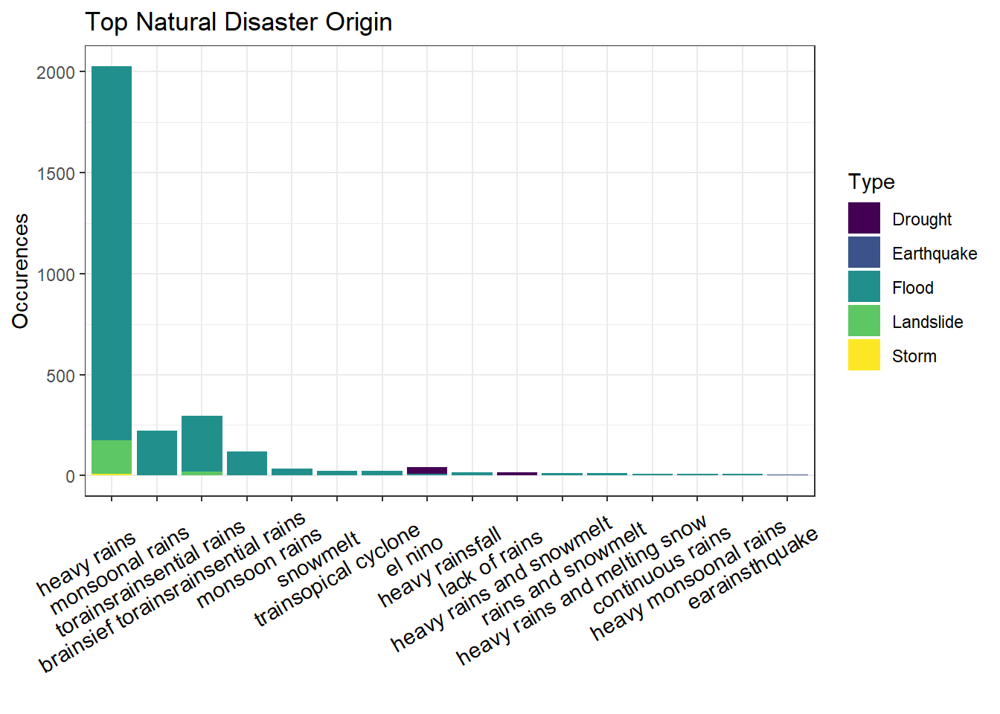

Chapter 4 Missing values
####First draft 1018
We want to firstly understand holistically what are the distribution of missing values across these columns.
## Associated_Dis2 Aid Subsubtype Insured_Damages Insured_Damages_Adjusted
## 0.943449819 0.941814426 0.924083319 0.911602685 0.911602685
## No_Homeless Appeal Declaration Associated_Dis No_Injured
## 0.843690825 0.812446204 0.756240317 0.744362197 0.743157170
## Origin Admin2_Code Total_Damages Total_Damages_Adjusted DM_Value
## 0.689533483 0.665777242 0.663797556 0.663797556 0.650714409
## Admin1_Code No_Affected Geo_Locations Total_Deaths Total_Affected
## 0.612756068 0.377517645 0.336374591 0.289808917 0.219228783
## Start_Day End_Day Subtype DM_Scale End_Month
## 0.167756929 0.161645722 0.150370115 0.066362541 0.025047340
## Start_Month No Subgroup Type Country
## 0.008865553 0.000000000 0.000000000 0.000000000 0.000000000
## ISO Region Continent Start_Year End_Year
## 0.000000000 0.000000000 0.000000000 0.000000000 0.000000000
## CPI
## 0.000000000## [1] 0.3967168We can see that Associated_Dis2, Aid, Subsubtype, Insured_Damages and Insured_Damages_Adjusted have very high percentage of missing values (>90%). Most columns have missing values, with average of 40% among all selected columns. 11 columns have nearly 0% of missing values.
Since our data have large size and different type of columns, to analyze the missing value more correctly, we divide the data by their types. In our data, column2-5 are about group and type of the disaster. Column 6-9 are region of the disaster such as country, location. Column 10-12 are origin and asso. Column 13-15 are appeal, dec and aid. Column16-17 are scale and value. Column 18-23 is time. Column24-28 are human impact and economic impact.Then we make different plots of missing values.

This is the plot of missing value of column6-9, about region of the disaster. from the plot, we are able to see that there are no missing values in all of those columns which are Country, ISO, Region and Continent. These are basic information of a disaster.
 This is the plot of missing value of column2-5, about type of the disaster. from the plot, we are able to see the subsubtype (Severe storm, Tornado, Lightning, etc.) has very high missing value, and subtype(Drought, Ground movement, Cold wave, etc.) have much smaller missing values than subsubtype. Subgroup(include Climatological, Geophysical, Meteorological) and type(Flood, storm, etc) have no missing values based on column.
This is the plot of missing value of column2-5, about type of the disaster. from the plot, we are able to see the subsubtype (Severe storm, Tornado, Lightning, etc.) has very high missing value, and subtype(Drought, Ground movement, Cold wave, etc.) have much smaller missing values than subsubtype. Subgroup(include Climatological, Geophysical, Meteorological) and type(Flood, storm, etc) have no missing values based on column.


We further want to understand if there is a missing pattern by country (one of the basic information) for these three columns. There is no obvious pattern for “Subsubtype”. Data for all countries all present high missing value percentage pattern. But Subtype missing value percentage is quite different across countries, with Micronesia and Polynesia lowest percentage of missing values.

This is the plot of missing value of column10-12, about origin and two assos of the disaster. from the plot, we are able to see that three of them has all have very high percentage of missing values. Most of the rows don’t have information on all three of these columns. This showcases that these set of columns may not be able to provide enough information for analysis.

 We further want to understand if there is a missing pattern by country (one of the basic information) for these three columns. These graphs show that all regions have similar patterns for missing values for this group of columns.
We further want to understand if there is a missing pattern by country (one of the basic information) for these three columns. These graphs show that all regions have similar patterns for missing values for this group of columns.

This is the plot of missing value of column13-15, about apeal, declaration and aid of the disaster. from the plot, three of them have evenly amount of missing values, and they are quite high. But we can still see that the aid has the most missing values. Also, the row with all three of them missing have largest amount.


 We further want to understand if there is a missing pattern by country (one of the basic information) for these three columns. These graphs show that Appeal and Aid have similar missing pattern for regions. For Declaration, Russian Fed has higher than average missing values.

This is the plot of missing value of column 16-17, about scale and value of the disaster. from the plot, the value has more missing than the scale. From the right hand side plot about pattern, we can also see that the row with value missing and scale not missing has the greatest amount. Also, the pattern of rows with both value and scale not missing has the second large amount, which is a good result for analyzing.
 This is the plot of missing value of column18-23, about times of the disaster. The plot shows that there are no missing valus according to start year nad end year. The two largest missing columns are start say and end day, which is reasonalbe since the the day is harder to record than month and year. From the pattern plot, the parrtern of rows with both start day and end day missing has the largest amount.
This is the plot of missing value of column18-23, about times of the disaster. The plot shows that there are no missing valus according to start year nad end year. The two largest missing columns are start say and end day, which is reasonalbe since the the day is harder to record than month and year. From the pattern plot, the parrtern of rows with both start day and end day missing has the largest amount.

This is the plot of missing value of column24-28, about human impact and economic impact of the disaster. from the plot, all of the columns of impact has missing values, but the total_affacted column has the smallest amount. The column with greatest missing values is No_Homeless, and No_Injured has lesser but similar amount of missing values.



We further want to understand if there is a missing pattern by country (one of the basic information) for these three columns. No_homeless and No_injured missing percentage is similar. Whereas for No_affected, it is quite different for different regions. Western Europe and Northern Europe have highest amount of missing values.